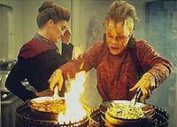
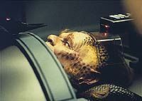
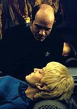
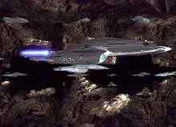
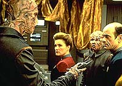
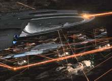
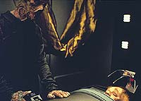

|
MANCHETE
DO EPISDIO
Aliengenas
interessantes em enredo
pouco realista marcam episdio
Episdio
anterior | Prximo
episdio
Sinopse:
Data Estelar: 48532.4.
 Durante
uma pesquisa em um planeta que parece ser rico em diltio bruto,
Neelix atacado e beira a morte. Os outros membros do grupo
avanado o encontram e o transportam para a Enfermaria, onde o
Doutor reporta que os pulmes do Talaxiano foram removidos. Sem
outras alternativas, o mdico cria rgos hologrficos e os
implanta em Neelix. Eles podem manter-lhe vivo, mas apenas se ele
ficar no confinamento de uma cmara instalada na Enfermaria, pelo
resto de sua vida.
 De
volta ao planetide, Janeway lidera um grupo avanado e descobre
um laboratrio mdico cheio de rgos extrados. Porm, os
pulmes de Neelix no esto l. Minutos mais tarde, uma nave
aliengena parte em dobra. O grupo retorna Voyager e inicia uma
perseguio.
Na Enfermaria, Neelix enfrenta
dificuldades para se adaptar situao e pede a Kes que continue
com sua vida apesar de sua invalidez. O holograma mdico, ainda
servindo como o nico doutor a bordo, tambm tem dificuldade em se
ajustar demanda em perodo integral. Os conselhos inteligentes e
revigorantes de Kes o levam a consider-la como uma assistente.
 Quando
confrontados, os aliengenas admitem que roubaram os pulmes do
Talaxiano, mas justificam suas aes ao contar sobre a luta que
sua espcie - os Vidiians - vem enfrentando contra uma praga
terrvel, a fagia - uma doena que destri o cdigo gentico e
estrutura celular das vtimas. Incapazes de combater a doena,
passaram a sobreviver extraindo cirurgicamente rgos saudveis
de outras espcies. Eles dizem tambm que os pulmes de Neelix
j foram transplantados para o corpo de um Vidiian. Decidindo no
sacrificar o aliengena para recuperar os rgos roubados, a
capit os libera, avisando que no cheguem perto de sua nave
novamente.
 Gratos
por terem sido poupados, os Vidiians oferecem ajuda para salvar
Neelix utilizando tecnologia mdica superior. Kes doa um de seus
pulmes, permitindo que Neelix leve uma vida normal. Depois do
procedimento, o Doutor conta a Kes que Janeway concedeu a permisso
para o incio de seu treinamento como uma enfermeira.
Comentrios:
 "Phage" tem fatores positivos e negativos.
Jogando a favor, um bom tema para o episdio e a introduo de
uma interessante espcie do quadrante Delta que voltaria a aparecer
na srie. Do lado ruim, um roteiro forado e uma perturbadora
semelhana com o maior clssico trash de Jornada nas Estrelas,
"Spock's Brain". S que desta vez, em vez de sair
pela galxia atrs do crebro de Spock, a corrida pelos pulmes
de Neelix.
A origem da premissa interessante e recorrente na atualidade --no
so novas as histrias escabrosas de mdicos que inadvertidamente
roubam rgos de pacientes durante intervenes cirrgicas para
fornec-los a um outro paciente, que pagar uma fortuna para ter o
rgo que lhe falta para um transplante.

Com certeza, os produtores tiveram uma inspirao bastante real na
hora de escrever o episdio. Infelizmente, eles se esqueceram de
preservar a integridade de Jornada nas Estrelas. bvio
que a clonagem de rgos ou mesmo a replicao deles estaria
disponvel a nossos amigos do sculo 24. Se isso fosse levado em
considerao, Neelix teria rapidamente outro par de pulmes para
si e os Vidiians viveriam felizes para sempre. Efeito colateral srio
para o episdio se eles levassem isso em conta: a histria
acabaria em 10 minutos.
Ou seja, fica transparente que o nico modo de sustentar essa histria
foi forando a barra. Mas tudo bem, h pontos positivos que
sustentam esses problemas.

O primeiro deles a criao dos Vidiians. Eles no so viles
esteriotipados --sua motivao clara e compreensvel, eles no
so simplesmente maus. At Janeway admitiu que entendia as
circunstncias que os levaram a agir daquele modo.
Alm disso, algumas interaes entre Neelix e o Doutor garantem
boas risadas e sustentam o telespectador na frente da TV. Mas no h
dvidas de que muito teria de ser repensado para tornar este episdio
mais verossmil e duradouro, capaz de entreter aps algumas
reprises.
Citaes:
Doutor - "The man
drives a 700,000 ton starship, so somebody thinks he makes a good
medic."
("O homem pilota uma nave de 700 mil toneladas, ento
algum pensa que ele daria um bom mdico.")
Trivia:
 Os Vidiians voltaro a aparecer na srie, no episdio "Faces"
desta mesma temporada.
Os Vidiians voltaro a aparecer na srie, no episdio "Faces"
desta mesma temporada.
Os aliengenas vtimas da Fagia, os Vidiians, so,
segundo Michael Westmore, "os mais feios aliengenas que j
criei em Jornada nas Estrelas". O coordenador de
efeitos-especiais Joe Bauer criou a sequncia em que o disparo de
feiser de Voyager refletido nos espelhos em homenagem ao episdio
da Srie Clssica "The Tholian Web".
-"Sou um mdico, sr. Neelix, no um
decorador."
Quando Robert Picard leu essa frase no roteiro do episdio, logo
disse: "Pensei que fosse uma piada, uma das frases que o Dr.
McCoy diria. Depois me disseram que realmente era uma frase de McCoy,
e que iriamos utilizar algumas frases como essa s vezes, a partir
de agora."
A sequncia da nave Voyager entrando em um asteride
muito parecida com uma cena do episdio "The Pegasus",
do 7 ano da Nova Gerao, quando a Enterprise-D tambm
entra em um asteride.
Ficha
tcnica:
Histria de Timothy De Haas
Roteiro de Skye Dent e Brannon Braga
Dirigido por Winrich Kolbe
Exibido em 06/02/1995
Produo: 005
Elenco:
Kate Mulgrew como
Kathryn Janeway
Robert Beltran como Chakotay
Roxann Biggs-Dawson como B'Elanna Torres
Robert Duncan McNeill como Tom Paris
Jennifer Lien como Kes
Ethan Phillips como Neelix
Robert Picardo como Doutor
Tim Russ como Tuvok
Garrett Wang como Harry Kim
Elenco convidado:
Cully Fredericksen
e Stephen Rappaport como os Vidiians
Episdio
anterior | Prximo
episdio
|